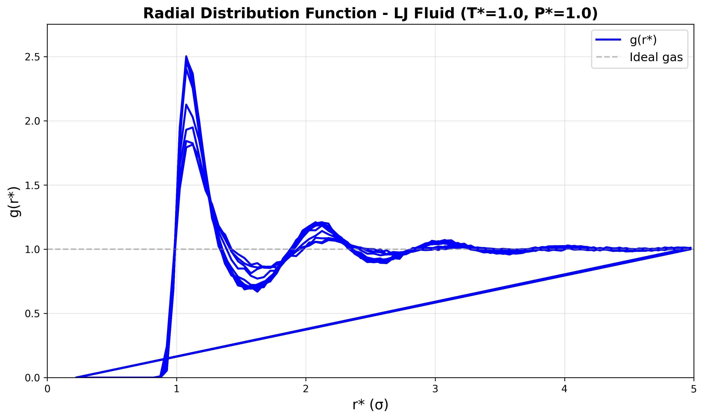
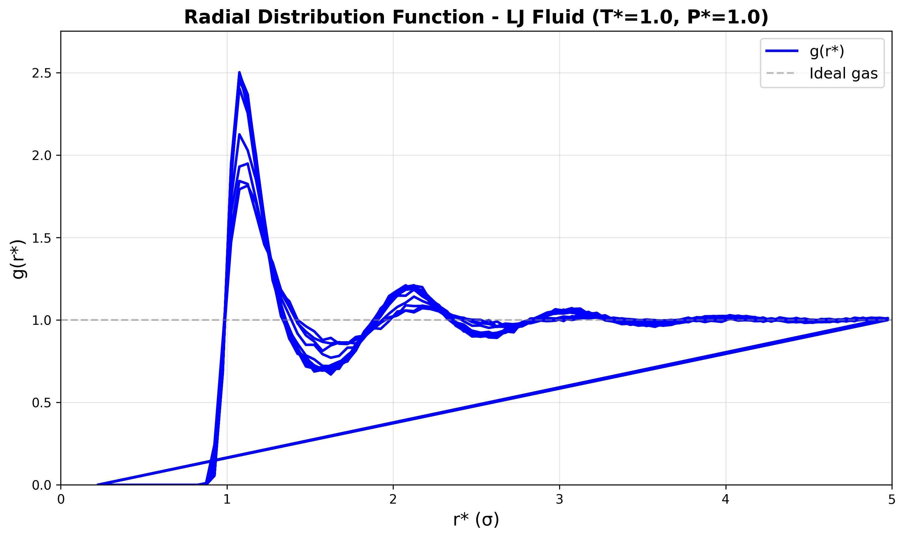

Molecular Dynamics with LAMMPS
Overview
LAMMPS (Large-scale Atomic/Molecular Massively Parallel Simulator) is a classical molecular dynamics code designed for materials modeling, soft matter, and biomolecular systems. It excels at simulating:
Atomic systems with various force fields (LJ, EAM, ReaxFF, etc.)
Thermodynamic ensembles (NVE, NVT, NPT)
Large-scale parallel simulations (billions of atoms)
Non-equilibrium phenomena (shock waves, fluid flow, shear)
This section covers the mathematical foundations, basic usage, energy minimization, and practical simulation examples with thermodynamic analysis.
Statistical Mechanics Foundations
Microcanonical Ensemble (NVE)
In the NVE ensemble, the number of particles \(N\), volume \(V\), and total energy \(E\) are conserved. The Hamiltonian governs the time evolution:
where \(\mathbf{p}_i\) are momenta, \(m_i\) are masses, and \(U(\mathbf{r}^N)\) is the potential energy.
Hamilton’s equations of motion:
In Cartesian coordinates, this reduces to Newton’s equations:
Canonical Ensemble (NVT)
In the NVT ensemble, temperature \(T\) is controlled via a thermostat. The Nosé-Hoover thermostat introduces an additional degree of freedom \(\xi\) with equations:
where \(Q\) is the thermal inertia parameter (mass of the thermostat), and \(k_B\) is Boltzmann’s constant.
The instantaneous temperature is:
Isothermal-Isobaric Ensemble (NPT)
The NPT ensemble controls both temperature and pressure \(P\). The Nosé-Hoover-Andersen barostat extends the thermostat with volume fluctuations:
where \(\eta\) is the barostat variable coupled to the instantaneous pressure:
with \(W\) being the barostat mass and \(P_0\) the target pressure. The instantaneous pressure (virial theorem):
Integration Algorithms
Velocity Verlet (NVE)
The velocity Verlet algorithm is symplectic and time-reversible, conserving energy in NVE:
where \(\mathbf{a}_i = \mathbf{F}_i / m_i\). The local truncation error is \(O(\Delta t^4)\), global error \(O(\Delta t^2)\).
Stability and Timestep
For harmonic oscillations with frequency \(\omega_{\max}\), stability requires:
Typical values: \(\Delta t = 0.5-2.0 \, \text{fs}\) for atomistic simulations with covalent bonds.
Lennard-Jones Potential
The Lennard-Jones (12-6) potential models van der Waals interactions:
Parameters:
\(\varepsilon\): depth of the potential well (energy scale)
\(\sigma\): distance where \(U_{\text{LJ}} = 0\) (length scale)
\(r_{\min} = 2^{1/6}\sigma \approx 1.122\sigma\): equilibrium distance (minimum energy)
\(U_{\min} = -\varepsilon\) at \(r = r_{\min}\)
Reduced Units
LAMMPS uses reduced (dimensionless) units for LJ systems:
For argon: \(\varepsilon/k_B \approx 120 \, \text{K}\), \(\sigma \approx 3.4 \, \text{Å}\), \(m = 39.948 \, \text{amu}\).
Force and Virial
The force is:
The virial contribution (for pressure calculation):
Energy Minimization
Before MD, systems often require energy minimization to remove bad contacts and high-energy configurations.
Steepest Descent
The simplest gradient-based method:
where \(\alpha\) is the step size. Convergence is slow but robust for rough landscapes.
Conjugate Gradient (CG)
CG uses conjugate search directions \(\mathbf{d}^{(n)}\):
with Polak-Ribière update:
CG converges faster than steepest descent, especially near minima.
LAMMPS Minimization Commands
minimize etol ftol maxiter maxeval
where:
etol= energy tolerance (\(\Delta E / N\))ftol= force tolerance (max \(|\mathbf{F}_i|\))maxiter= max iterationsmaxeval= max force/energy evaluations
Example:
minimize 1.0e-4 1.0e-6 1000 10000
Basic LAMMPS Workflow
1. Initialization
# Units and atom style
units lj # reduced units
atom_style atomic # point particles
dimension 3
boundary p p p # periodic boundaries
# Simulation box
lattice fcc 0.8442 # density ρ* = 0.8442
region box block 0 10 0 10 0 10
create_box 1 box
create_atoms 1 box
# Mass (reduced units: m* = 1)
mass 1 1.0
2. Interaction Potential
# LJ potential with cutoff rc = 2.5σ
pair_style lj/cut 2.5
pair_coeff 1 1 1.0 1.0 # ε = 1, σ = 1
3. Thermodynamic Output
thermo_style custom step temp pe ke etotal press vol density
thermo 100 # output every 100 steps
4. Initial Velocities
velocity all create 1.0 87287 dist gaussian # T* = 1.0, random seed
5. Time Integration
# NVE ensemble
fix 1 all nve
timestep 0.005 # Δt* = 0.005
# NVT ensemble (Nosé-Hoover thermostat)
fix 1 all nvt temp 1.0 1.0 0.1 # T* = 1.0, damping τ* = 0.1
# NPT ensemble
fix 1 all npt temp 1.0 1.0 0.1 iso 1.0 1.0 1.0 # T* = 1.0, P* = 1.0
6. Run Simulation
run 10000 # 10,000 timesteps
Simulation Example: Lennard-Jones Fluid
We simulate a Lennard-Jones fluid in the NPT ensemble, starting from an FCC lattice at high density, equilibrating to liquid density, and calculating thermodynamic properties.
LAMMPS Input Script (lj_fluid.in):
# LJ fluid simulation - NPT ensemble
units lj
atom_style atomic
dimension 3
boundary p p p
# Create FCC lattice (864 atoms)
lattice fcc 0.8442
region box block 0 6 0 6 0 6
create_box 1 box
create_atoms 1 box
mass 1 1.0
# LJ potential
pair_style lj/cut 2.5
pair_coeff 1 1 1.0 1.0
# Neighbor list
neighbor 0.3 bin
neigh_modify every 1 delay 0 check yes
# Initial velocities (T* = 2.0, high temperature)
velocity all create 2.0 482901 dist gaussian
# Thermodynamic output
thermo_style custom step temp pe ke etotal press vol density
thermo 100
# Trajectory output for visualization
dump 1 all custom 50 trajectory.lammpstrj id type x y z
dump_modify 1 sort id
# NPT equilibration (cool from T* = 2.0 to T* = 1.0)
fix 1 all npt temp 2.0 1.0 0.1 iso 1.0 1.0 1.0
timestep 0.005
run 5000
# NPT production run (T* = 1.0, P* = 1.0)
unfix 1
fix 2 all npt temp 1.0 1.0 0.1 iso 1.0 1.0 1.0
run 10000
write_data lj_final.data
Running the Simulation
lmp -in lj_fluid.in > lj_fluid.log
Calculating Thermodynamic Properties
Average Temperature
From the kinetic energy:
Average Pressure
Virial equation:
Heat Capacity (Constant Volume)
From energy fluctuations:
In reduced units:
Radial Distribution Function \(g(r)\)
The probability of finding a particle at distance \(r\) from a reference particle:
In LAMMPS:
compute rdf all rdf 100 1 1 cutoff 5.0
fix 3 all ave/time 100 1 100 c_rdf[*] file rdf.dat mode vector
Diffusion Coefficient
From the mean-square displacement (Einstein relation):
In LAMMPS:
compute msd all msd
fix 4 all ave/time 1 1 1 c_msd[4] file msd.dat
Visualization and Animation
To create trajectory visualizations, we post-process the trajectory.lammpstrj file using Python.
Python Script (visualize_lammps.py):
import numpy as np
import matplotlib.pyplot as plt
from matplotlib.animation import PillowWriter
from mpl_toolkits.mplot3d import Axes3D
def read_lammpstrj(filename):
"""Parse LAMMPS trajectory file."""
frames = []
with open(filename, 'r') as f:
lines = f.readlines()
i = 0
while i < len(lines):
if 'ITEM: TIMESTEP' in lines[i]:
timestep = int(lines[i+1].strip())
i += 2
# Number of atoms
assert 'ITEM: NUMBER OF ATOMS' in lines[i]
natoms = int(lines[i+1].strip())
i += 2
# Box bounds
assert 'ITEM: BOX BOUNDS' in lines[i]
xlo_xhi = list(map(float, lines[i+1].split()))
ylo_yhi = list(map(float, lines[i+2].split()))
zlo_zhi = list(map(float, lines[i+3].split()))
box = [xlo_xhi, ylo_yhi, zlo_zhi]
i += 4
# Atom data
assert 'ITEM: ATOMS' in lines[i]
i += 1
coords = []
for j in range(natoms):
data = lines[i+j].split()
coords.append([float(data[2]), float(data[3]), float(data[4])])
i += natoms
frames.append({'timestep': timestep, 'coords': np.array(coords), 'box': box})
else:
i += 1
return frames
def create_animation(frames, output_file='lammps_trajectory.gif', skip=5):
"""Create animated GIF from trajectory frames."""
fig = plt.figure(figsize=(8, 8))
ax = fig.add_subplot(111, projection='3d')
# Set up the writer
writer = PillowWriter(fps=10)
with writer.saving(fig, output_file, dpi=100):
for idx, frame in enumerate(frames[::skip]):
if idx > 50: # Limit to first 50 frames
break
ax.clear()
coords = frame['coords']
box = frame['box']
# Plot atoms
ax.scatter(coords[:, 0], coords[:, 1], coords[:, 2],
c='blue', marker='o', s=50, alpha=0.6)
# Set axis limits from box
ax.set_xlim([box[0][0], box[0][1]])
ax.set_ylim([box[1][0], box[1][1]])
ax.set_zlim([box[2][0], box[2][1]])
ax.set_xlabel('x*')
ax.set_ylabel('y*')
ax.set_zlabel('z*')
ax.set_title(f'Timestep: {frame["timestep"]}')
writer.grab_frame()
print(f'Animation saved to {output_file}')
def plot_thermodynamics(logfile='lj_fluid.log'):
"""Plot thermodynamic quantities from LAMMPS log."""
# Parse log file (simple parsing - assumes thermo_style custom)
step, temp, pe, ke, etotal, press, vol, density = [], [], [], [], [], [], [], []
with open(logfile, 'r') as f:
reading = False
for line in f:
if 'Step Temp PotEng KinEng TotEng Press Volume Density' in line:
reading = True
continue
if reading:
if line.startswith('Loop time'):
break
try:
data = list(map(float, line.split()))
if len(data) == 8:
step.append(data[0])
temp.append(data[1])
pe.append(data[2])
ke.append(data[3])
etotal.append(data[4])
press.append(data[5])
vol.append(data[6])
density.append(data[7])
except:
pass
# Create plots
fig, axes = plt.subplots(2, 2, figsize=(12, 10))
axes[0, 0].plot(step, temp, 'b-', linewidth=1)
axes[0, 0].set_xlabel('Step')
axes[0, 0].set_ylabel('Temperature T*')
axes[0, 0].grid(True, alpha=0.3)
axes[0, 0].axhline(1.0, color='r', linestyle='--', label='Target')
axes[0, 0].legend()
axes[0, 1].plot(step, press, 'g-', linewidth=1)
axes[0, 1].set_xlabel('Step')
axes[0, 1].set_ylabel('Pressure P*')
axes[0, 1].grid(True, alpha=0.3)
axes[0, 1].axhline(1.0, color='r', linestyle='--', label='Target')
axes[0, 1].legend()
axes[1, 0].plot(step, etotal, 'purple', linewidth=1)
axes[1, 0].set_xlabel('Step')
axes[1, 0].set_ylabel('Total Energy E*')
axes[1, 0].grid(True, alpha=0.3)
axes[1, 1].plot(step, density, 'orange', linewidth=1)
axes[1, 1].set_xlabel('Step')
axes[1, 1].set_ylabel('Density ρ*')
axes[1, 1].grid(True, alpha=0.3)
plt.tight_layout()
plt.savefig('lammps_thermodynamics.png', dpi=300)
print('Thermodynamics plot saved to lammps_thermodynamics.png')
if __name__ == '__main__':
# Read and visualize trajectory
frames = read_lammpstrj('trajectory.lammpstrj')
create_animation(frames, 'lammps_trajectory.gif', skip=5)
# Plot thermodynamic properties
plot_thermodynamics('lj_fluid.log')
Running the Visualization
python visualize_lammps.py
This generates:
lammps_trajectory.gif: animated 3D visualization of particle motionlammps_thermodynamics.png: time evolution of T*, P*, E*, and ρ*
Complete Simulation Script
The full Python script that creates the LAMMPS input, runs the simulation, and generates visualizations is provided below.
#!/usr/bin/env python3
"""
LAMMPS Lennard-Jones fluid simulation with visualization
"""
import os
import subprocess
import numpy as np
import matplotlib.pyplot as plt
from matplotlib.animation import PillowWriter
from mpl_toolkits.mplot3d import Axes3D
def create_lammps_input():
"""Generate LAMMPS input script."""
script = """# LJ fluid simulation - NPT ensemble
units lj
atom_style atomic
dimension 3
boundary p p p
# Create FCC lattice (864 atoms)
lattice fcc 0.8442
region box block 0 6 0 6 0 6
create_box 1 box
create_atoms 1 box
mass 1 1.0
# LJ potential
pair_style lj/cut 2.5
pair_coeff 1 1 1.0 1.0
# Neighbor list
neighbor 0.3 bin
neigh_modify every 1 delay 0 check yes
# Initial velocities (T* = 2.0)
velocity all create 2.0 482901 dist gaussian
# Thermodynamic output
thermo_style custom step temp pe ke etotal press vol density
thermo 100
# Trajectory output
dump 1 all custom 50 trajectory.lammpstrj id type x y z
dump_modify 1 sort id
# RDF calculation
compute rdf all rdf 100 1 1 cutoff 5.0
fix 3 all ave/time 100 10 1000 c_rdf[*] file rdf.dat mode vector
# MSD calculation
compute msd all msd
fix 4 all ave/time 1 1 1 c_msd[4] file msd.dat
# NPT equilibration (cool from T* = 2.0 to T* = 1.0)
fix 1 all npt temp 2.0 1.0 0.1 iso 1.0 1.0 1.0
timestep 0.005
run 5000
# NPT production (T* = 1.0, P* = 1.0)
unfix 1
fix 2 all npt temp 1.0 1.0 0.1 iso 1.0 1.0 1.0
run 10000
write_data lj_final.data
"""
with open('lj_fluid.in', 'w') as f:
f.write(script)
print('Created lj_fluid.in')
def run_lammps():
"""Run LAMMPS simulation."""
if not os.path.exists('lj_fluid.in'):
create_lammps_input()
print('Running LAMMPS simulation...')
result = subprocess.run(['lmp', '-in', 'lj_fluid.in'],
capture_output=True, text=True)
with open('lj_fluid.log', 'w') as f:
f.write(result.stdout)
if result.returncode == 0:
print('Simulation completed successfully')
else:
print(f'Error running LAMMPS: {result.stderr}')
def read_lammpstrj(filename):
"""Parse LAMMPS trajectory file."""
frames = []
if not os.path.exists(filename):
return frames
with open(filename, 'r') as f:
lines = f.readlines()
i = 0
while i < len(lines):
if 'ITEM: TIMESTEP' in lines[i]:
timestep = int(lines[i+1].strip())
i += 2
assert 'ITEM: NUMBER OF ATOMS' in lines[i]
natoms = int(lines[i+1].strip())
i += 2
assert 'ITEM: BOX BOUNDS' in lines[i]
xlo_xhi = list(map(float, lines[i+1].split()))
ylo_yhi = list(map(float, lines[i+2].split()))
zlo_zhi = list(map(float, lines[i+3].split()))
box = [xlo_xhi, ylo_yhi, zlo_zhi]
i += 4
assert 'ITEM: ATOMS' in lines[i]
i += 1
coords = []
for j in range(natoms):
data = lines[i+j].split()
coords.append([float(data[2]), float(data[3]), float(data[4])])
i += natoms
frames.append({'timestep': timestep, 'coords': np.array(coords), 'box': box})
else:
i += 1
return frames
def create_animation(frames, output_file='lammps_trajectory.gif', skip=5):
"""Create animated GIF."""
fig = plt.figure(figsize=(8, 8))
ax = fig.add_subplot(111, projection='3d')
writer = PillowWriter(fps=10)
with writer.saving(fig, output_file, dpi=100):
for idx, frame in enumerate(frames[::skip]):
if idx > 50:
break
ax.clear()
coords = frame['coords']
box = frame['box']
ax.scatter(coords[:, 0], coords[:, 1], coords[:, 2],
c='blue', marker='o', s=50, alpha=0.6, edgecolors='darkblue')
ax.set_xlim([box[0][0], box[0][1]])
ax.set_ylim([box[1][0], box[1][1]])
ax.set_zlim([box[2][0], box[2][1]])
ax.set_xlabel('x* (σ)', fontsize=12)
ax.set_ylabel('y* (σ)', fontsize=12)
ax.set_zlabel('z* (σ)', fontsize=12)
ax.set_title(f'LJ Fluid: Timestep {frame["timestep"]}', fontsize=14)
writer.grab_frame()
print(f'Animation saved to {output_file}')
def plot_thermodynamics(logfile='lj_fluid.log'):
"""Plot thermodynamic quantities."""
step, temp, pe, ke, etotal, press, vol, density = [], [], [], [], [], [], [], []
with open(logfile, 'r') as f:
reading = False
for line in f:
if 'Step Temp PotEng KinEng TotEng Press Volume Density' in line:
reading = True
continue
if reading:
if line.startswith('Loop time'):
break
try:
data = list(map(float, line.split()))
if len(data) == 8:
step.append(data[0])
temp.append(data[1])
pe.append(data[2])
ke.append(data[3])
etotal.append(data[4])
press.append(data[5])
vol.append(data[6])
density.append(data[7])
except:
pass
fig, axes = plt.subplots(2, 2, figsize=(14, 10))
axes[0, 0].plot(step, temp, 'b-', linewidth=1.5)
axes[0, 0].set_xlabel('Step', fontsize=12)
axes[0, 0].set_ylabel('Temperature T*', fontsize=12)
axes[0, 0].grid(True, alpha=0.3)
axes[0, 0].axhline(1.0, color='r', linestyle='--', linewidth=2, label='Target T*=1.0')
axes[0, 0].legend(fontsize=10)
axes[0, 0].set_title('Temperature Evolution', fontsize=13)
axes[0, 1].plot(step, press, 'g-', linewidth=1.5)
axes[0, 1].set_xlabel('Step', fontsize=12)
axes[0, 1].set_ylabel('Pressure P*', fontsize=12)
axes[0, 1].grid(True, alpha=0.3)
axes[0, 1].axhline(1.0, color='r', linestyle='--', linewidth=2, label='Target P*=1.0')
axes[0, 1].legend(fontsize=10)
axes[0, 1].set_title('Pressure Evolution', fontsize=13)
axes[1, 0].plot(step, etotal, 'purple', linewidth=1.5)
axes[1, 0].set_xlabel('Step', fontsize=12)
axes[1, 0].set_ylabel('Total Energy E*', fontsize=12)
axes[1, 0].grid(True, alpha=0.3)
axes[1, 0].set_title('Energy Conservation', fontsize=13)
axes[1, 1].plot(step, density, 'orange', linewidth=1.5)
axes[1, 1].set_xlabel('Step', fontsize=12)
axes[1, 1].set_ylabel('Density ρ*', fontsize=12)
axes[1, 1].grid(True, alpha=0.3)
axes[1, 1].set_title('Density Evolution', fontsize=13)
plt.tight_layout()
plt.savefig('lammps_thermodynamics.png', dpi=300, bbox_inches='tight')
print('Thermodynamics plot saved to lammps_thermodynamics.png')
# Calculate averages (last 5000 steps - equilibrated)
eq_idx = len(step) // 2
avg_temp = np.mean(temp[eq_idx:])
avg_press = np.mean(press[eq_idx:])
avg_density = np.mean(density[eq_idx:])
print(f'\\nEquilibrated averages (last half):')
print(f' <T*> = {avg_temp:.4f}')
print(f' <P*> = {avg_press:.4f}')
print(f' <ρ*> = {avg_density:.4f}')
def plot_rdf(rdffile='rdf.dat'):
"""Plot radial distribution function."""
if not os.path.exists(rdffile):
print(f'{rdffile} not found')
return
data = np.loadtxt(rdffile, comments='#')
r = data[:, 1]
g_r = data[:, 2]
plt.figure(figsize=(10, 6))
plt.plot(r, g_r, 'b-', linewidth=2)
plt.xlabel('r* (σ)', fontsize=14)
plt.ylabel('g(r*)', fontsize=14)
plt.title('Radial Distribution Function - LJ Fluid', fontsize=15)
plt.grid(True, alpha=0.3)
plt.xlim([0, 5])
plt.axhline(1.0, color='gray', linestyle='--', alpha=0.5)
plt.tight_layout()
plt.savefig('lammps_rdf.png', dpi=300)
print('RDF plot saved to lammps_rdf.png')
def main():
"""Main execution function."""
print('='*60)
print('LAMMPS Lennard-Jones Fluid Simulation')
print('='*60)
# Create input and run
create_lammps_input()
run_lammps()
# Visualizations
print('\\nGenerating visualizations...')
frames = read_lammpstrj('trajectory.lammpstrj')
if frames:
create_animation(frames)
if os.path.exists('lj_fluid.log'):
plot_thermodynamics('lj_fluid.log')
plot_rdf('rdf.dat')
print('\\nAll done!')
if __name__ == '__main__':
main()
Expected Results
After running the simulation and visualization script, you should obtain:
Trajectory Animation (
lammps_trajectory.gif): 3D visualization showing liquid-like motion of particlesThermodynamic Properties (
lammps_thermodynamics.png):Temperature equilibrates to \(T^* = 1.0\)
Pressure fluctuates around \(P^* = 1.0\)
Density stabilizes around \(\rho^* \approx 0.84\)
Radial Distribution Function (
lammps_rdf.png):First peak at \(r^* \approx 1.1\) (nearest neighbors), characteristic liquid structure

 

{kind=link}
Advanced Topics
Parallel Execution
LAMMPS uses MPI for parallel computing:
mpirun -np 4 lmp -in lj_fluid.in # 4 processors
Custom Potentials
For water simulations (TIP3P, SPC/E):
pair_style lj/cut/coul/long 10.0
kspace_style pppm 1.0e-4
pair_coeff * * 0.1553 3.166 # oxygen-oxygen
Non-equilibrium MD
Shear flow (NEMD):
fix 1 all nvt/sllod temp 1.0 1.0 0.1
fix 2 all deform 1 xy erate 0.01 remap v # shear strain rate
References
LAMMPS Documentation Plimpton, S. (1995). Fast Parallel Algorithms for Short-Range Molecular Dynamics. Journal of Computational Physics, 117(1), 1-19. https://docs.lammps.org
Molecular Dynamics Theory Frenkel, D., & Smit, B. (2001). Understanding Molecular Simulation: From Algorithms to Applications (2nd ed.). Academic Press.
Statistical Mechanics Allen, M. P., & Tildesley, D. J. (2017). Computer Simulation of Liquids (2nd ed.). Oxford University Press.
Lennard-Jones Fluid Verlet, L. (1967). Computer “Experiments” on Classical Fluids. I. Thermodynamical Properties of Lennard-Jones Molecules. Physical Review, 159(1), 98-103.
Integration Algorithms Swope, W. C., Andersen, H. C., Berens, P. H., & Wilson, K. R. (1982). A Computer Simulation Method for the Calculation of Equilibrium Constants. The Journal of Chemical Physics, 76(1), 637-649.
Nosé-Hoover Thermostat Nosé, S. (1984). A Molecular Dynamics Method for Simulations in the Canonical Ensemble. Molecular Physics, 52(2), 255-268. Hoover, W. G. (1985). Canonical Dynamics: Equilibrium Phase-Space Distributions. Physical Review A, 31(3), 1695-1697.
Pressure Control Parrinello, M., & Rahman, A. (1981). Polymorphic Transitions in Single Crystals: A New Molecular Dynamics Method. Journal of Applied Physics, 52(12), 7182-7190.
Energy Minimization Press, W. H., Teukolsky, S. A., Vetterling, W. T., & Flannery, B. P. (2007). Numerical Recipes: The Art of Scientific Computing (3rd ed.). Cambridge University Press.